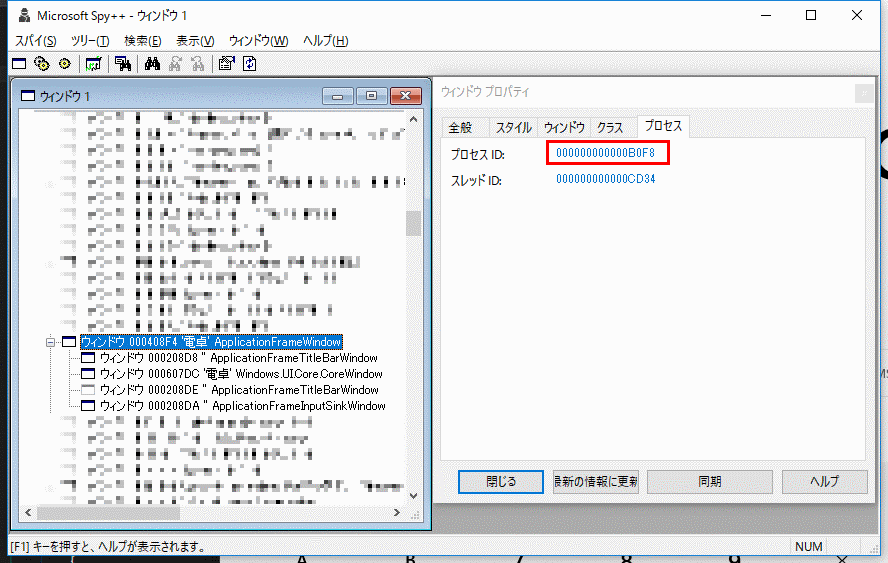
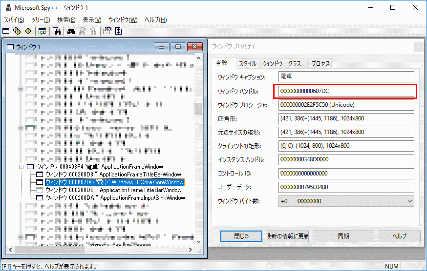

Question
またまたつまらない疑問。 開発メモ その36 UWPAppはSystem.Diagnostics.Process.GetProcessesで列挙されるか?で試したように、プロセスIDがわかればWin32APIを駆使してHWNDを取得できるか?という件。
Answer
ちょっと面倒な模様。 開発メモ その37 UWPAppはどういうウィンドウ構造をしているか?で書いたように、UWPアプリは、
- ApplicationFrameWindow
- Windows.UI.Core.CoreWindow
という構造になっている状態。 で、Spy++**で調べた結果、先のSystem.Diagnostics.Process.GetProcessesメソッドで取得できるプロセスIDはWindows.UI.Core.CoreWindow**のものであることがわかった、 つまり、
  プロセスIDが違うのである。 なので、GetTopWindow、GetWindowThreadProcessId、GetWindow
プロセスIDが違うのである。 なので、GetTopWindow、GetWindowThreadProcessId、GetWindow
を駆使して、トップレベルウィンドウから対象のプロセスIDを探す方法ではダメ。 面倒だが、トップレベルウィンドウのクラス名がApplicationFrameWindowかつ子ウィンドウのクラス名がWindows.UI.Core.CoreWindowになっているウィンドウを探し出し、そのプロセスIDと比較する必要がありそう。 具体的には、 [code lang=”csharp”] using System; using System.Linq; using System.Runtime.InteropServices; using System.Text; using HWND = System.IntPtr; using DWORD = System.UInt32;
namespace ConsoleApplication1 { class Program { delegate bool Win32Callback(IntPtr hWnd, ref IntPtr lParam);
[DllImport(“user32.dll”)] [return: MarshalAs(UnmanagedType.Bool)] static extern bool EnumWindows(Win32Callback lpEnumFunc, ref IntPtr lParam);
[DllImport(“user32.dll”, SetLastError = true)] static extern IntPtr FindWindowEx(IntPtr hwndParent, IntPtr hwndChildAfter, string lpszClass, string lpszWindow);
[DllImport(“user32.dll”, CharSet = CharSet.Auto)] static extern int GetClassName(IntPtr hWnd, StringBuilder lpClassName, int nMaxCount);
[DllImport(“user32.dll”, SetLastError = true)] static extern uint GetWindowThreadProcessId(IntPtr hWnd, out uint lpdwProcessId);
static readonly uint GW_HWNDNEXT = 2;
static readonly int GWL_HWNDPARENT = -8;
static readonly IntPtr NULL = System.IntPtr.Zero;
static void Main(string[] args) { var ps = System.Diagnostics.Process.GetProcesses().Where(process => process.ProcessName == “Calculator”); if (!ps.Any()) return;
var calc = ps.First(); var pid = calc.Id;
Console.WriteLine(“プロセス名: {0}”, calc.ProcessName); Console.WriteLine(“ID: {0}”, calc.Id);
// EnumWindowsProc で探索対象のプロセスIDを設定 TargetProcessId = (uint)pid;
var proc = new Win32Callback(EnumWindowsProc);
var hTarget = IntPtr.Zero; EnumWindows(proc, ref hTarget);
Console.WriteLine(“HWND: {0}”, hTarget.ToString(“X”)); }
private static uint TargetProcessId;
static bool EnumWindowsProc(IntPtr hWnd, ref IntPtr lParam) { var hChild = IntPtr.Zero; var buf = new StringBuilder(1024); GetClassName(hWnd, buf, buf.Capacity); switch (buf.ToString()) { case “ApplicationFrameWindow”: hChild = FindWindowEx(hWnd, IntPtr.Zero, “Windows.UI.Core.CoreWindow”, null); DWORD processId; GetWindowThreadProcessId(hChild, out processId); if (TargetProcessId == processId) { lParam = hChild; return false; } break; } return true; }
} } [/code] これで、電卓のウィンドウハンドルを取得できる。

{kind=link}
{kind=link}
{kind=link}